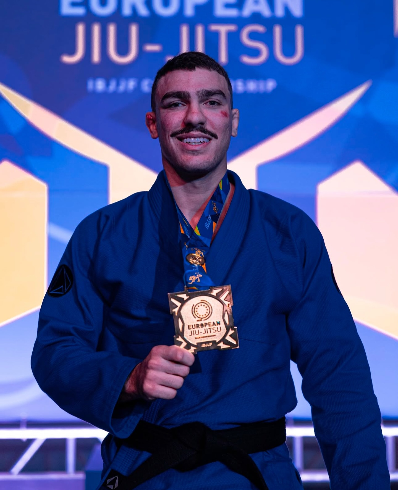

2001
Portugal
Manoel Neto estabelece-se no Norte de Portugal e inicia um novo capítulo num país onde o Brazilian Jiu-Jitsu ainda estava em desenvolvimento.
HISTÓRIA & CONQUISTAS
Uma história construída no tatami, desde os primeiros passos da equipa no início dos anos 2000 até à Focus Jiu-Jitsu de hoje.
AS ORIGENS
Em 2001, Manoel Neto deixou o Brasil e estabeleceu-se no Norte de Portugal, numa altura em que o Brazilian Jiu-Jitsu ainda dava os primeiros passos no país. Em 2003 começou a ensinar e, em 2006, já faixa preta, criou a Team Manoel Neto — a base da equipa que mais tarde se tornaria Focus Jiu-Jitsu.
Desde o início, o projeto foi construído em torno do ensino, da evolução técnica, da competição e da criação de uma cultura de equipa capaz de crescer com cada nova geração.

A EVOLUÇÃO
Manoel Neto estabelece-se no Norte de Portugal e inicia um novo capítulo num país onde o Brazilian Jiu-Jitsu ainda estava em desenvolvimento.

Manoel inicia o seu percurso como professor no Norte de Portugal.

A equipa assume a sua primeira identidade própria, no mesmo ano em que Manoel recebe a faixa preta.

Começa em Matosinhos uma nova fase de crescimento, criando uma base mais forte para o treino, a formação de atletas e a expansão da equipa.

Pedro “Paquito” Ramalho conquista o Mundial IBJJF, o Europeu e o Abu Dhabi World Professional enquanto faixa roxa, levando a equipa a um novo patamar internacional.

A 23 de junho de 2016, a Team Manoel Neto passa oficialmente a chamar-se Focus Jiu-Jitsu. Nessa altura, o projeto já tinha crescido para uma rede de 15 academias afiliadas em Portugal.

Davi Vetoraci muda-se para Portugal e integra a Focus, continuando a sua evolução dentro da equipa e tornando-se uma das suas principais referências competitivas internacionais.

Davi Vetoraci conquista o Campeonato Europeu IBJJF Adulto de faixa preta — o seu primeiro major enquanto faixa preta.

A Focus alcança o 1.º lugar overall no Portugal Grand Slam em edições consecutivas, reforçando a força coletiva da equipa.
MARCOS COMPETITIVOS

PRIMEIRA GERAÇÃO INTERNACIONAL
Formado por Manoel Neto desde faixa branca até à faixa preta, Paquito tornou-se uma das primeiras grandes referências internacionais produzidas pela equipa.

NOVA GERAÇÃO INTERNACIONAL
Depois de se mudar para Portugal em 2021, Davi continuou o seu percurso internacional com a Focus e alcançou um dos marcos individuais mais importantes da história recente da equipa.
RESULTADOS DA EQUIPA
Para além dos títulos individuais, a Focus construiu uma presença coletiva consistente nas principais competições, com resultados recorrentes por equipas.
Overall
Overall
Overall
Overall

FOCUS HOJE
O que começou no Norte de Portugal evoluiu de uma equipa local para uma rede de academias ligadas pela mesma identidade, exigência técnica e cultura de equipa.

FOCUS JIU-JITSU